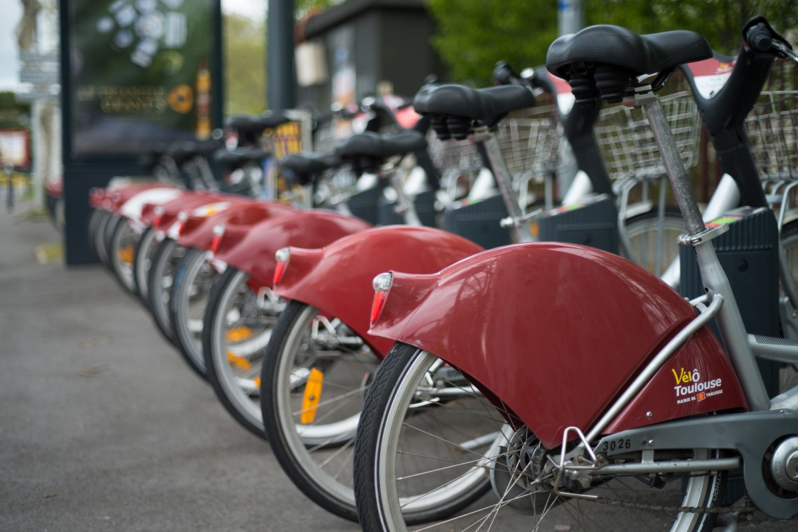
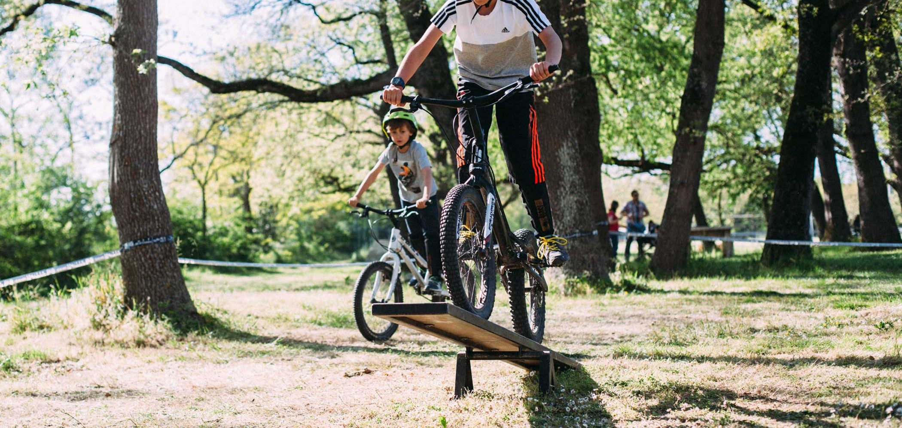
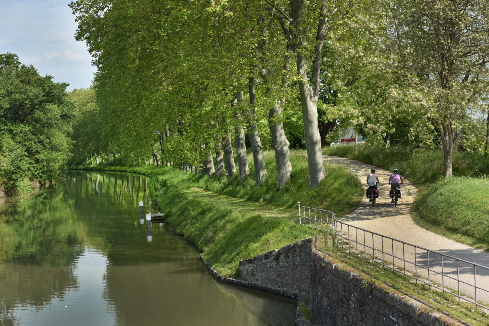
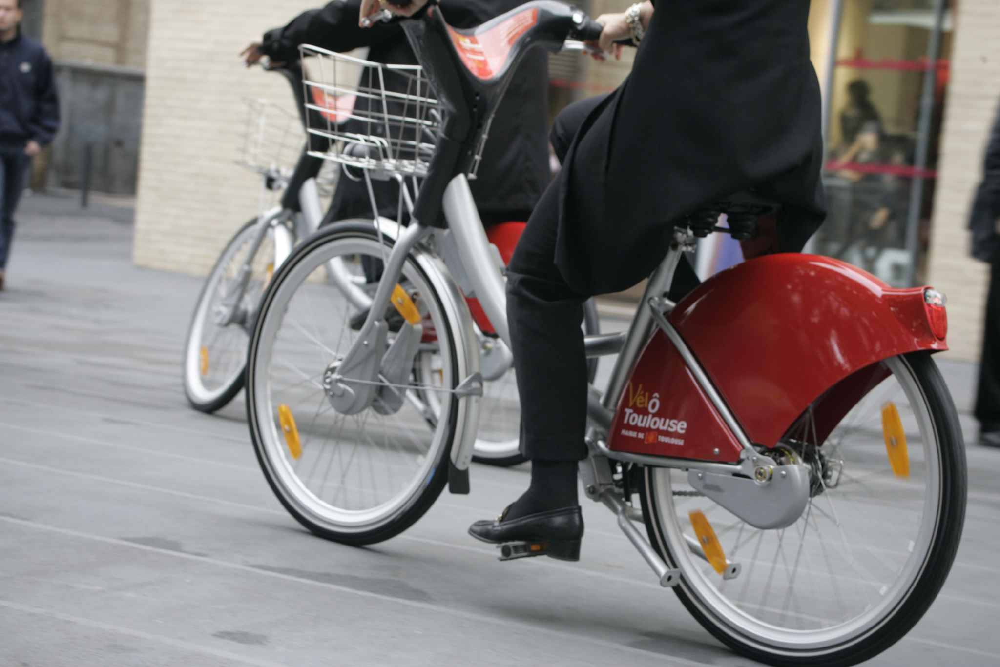

Bienvenue !

Nouveau chez nous ?

Pour commencer, selectionnez un point sur la carteInscrivez ensuite votre nom, prenom et votre plus belle signature

Bravo ! Votre velo est reserve pour 20 minutes.
Map
Informations de la station
Statut de la station :
Nom de la station :
Adresse de la station :
Nombre de places totales :
Nombre de velos disponibles :
Nom
Prenom
la reservation du velo a la station
a l'adresse
par
temps restant :